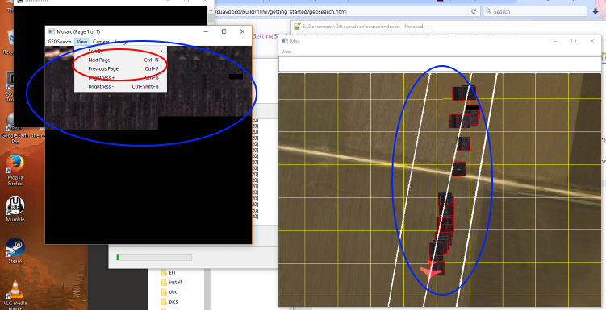
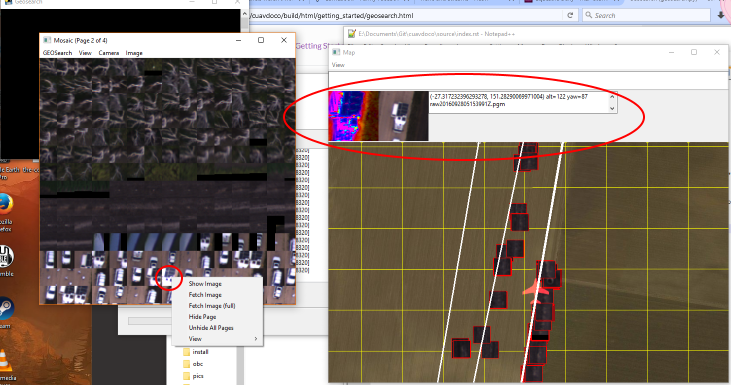

Geosearch (geosearch.py)¶
Starting¶
This program searches a set of photos taken by a UAV and looks for any interesting or unusual objects (such as stranded people). Any candidate objects are georeferenced on a map and shown to the user.
The overall objective is to quickly and easily find the location of a missing person, based on a set of photos taken overhead by a UAS.
The algorithm used in geosearch is very conservative and will err on the side of cuation when deciding if an object is "interesting" enough to flag to the user. Thus it is expected that many false positives will be detected, at which point it will be up to the user to figure out if an image contains the desired person or object.
The algorithm is tuned for finding person-sized and shaped objects that contrast well against the background. So a person laying down and wearing high-visibility clothing will be easily found. It has been (somewhat humourously) noted that sheep to fit in this category too.
There are two ways of running geosearch:
- With timestamped images and a flight log (use
--mavlogto specify log) - With geotagged images
It has the following options and arguments:
| Argument | Description | Default |
|---|---|---|
| files | Directory containing png image files | (none) |
| --mavlog | Telemetry logfile (tlog) | (none) |
| --mission | Waypoints text file for displaying mission | (none) |
| --kmzlog | Kmz file for image positions | (none) |
| --triggerlog | Robota trigger file for image positions | (none) |
| --time-offset | Offset between camera and mavlink log times | 0 seconds |
| --view | Show images | False |
| --saveview | Save image view | False |
| --lens | Lens focal length | 28 |
| --sensorwidth | Sensor (camera) width | 35 mm |
| --service | Map tile service | MicrosoftSat |
| --camera-params | Camera calibration json file from OpenCV | (none) |
| --debug | Enable debug info | False |
| --roll-stabilised | Is camera roll stabilised? | False |
| --rotate-180 | Rotate images 180 degrees | False |
| --altitude | Altitude when images captured (0 for automatic) | 0 |
| --thumbsize | Thumbnail size | 60 |
| --mosaic-thumbsize | Mosiac thumbnail size | 35 |
| --minscore | Minimum score for an objects to be 'detected' | 100 |
| --gammalog | Gamma.log from flight | (none) |
| --target | Lat,lon,radius of area to search | (none) |
| --categories | Xml file containing categories for classification | (none) |
| --flag | Flag positions | (none) |
| --blue-emphasis | Enable blue emphasis in scanner | False |
If no arguments are supplied, a GUI will appear asking for startup options.
Otherwise, it can be started directly from the commandline. For example, In Linux:
geosearch.py <arguments> <folder>
geosearch.py --mavlog=flight.tlog /home/user/images/tosearch
Running¶
After starting Geosearch, 2 windows (by default) will appear - a "Mosaic" window that shows a cropped image of any detected interesting images and the "Map" window which shows the location of the cropped image (plus UAV, if using a tlog).
To start the processing, go to GEOSearch -> Start in the menu of the Mosiac window (see below image, start
button in red).

Once started, the GEOsearch will run through the images (and tlog, if used) at a faster-than-realtime rate. As interesting objects are found in the images, a cropped image of the detected object will be display in the mosaic.
If many images are found, use the View -> Next Page menu to scroll to the next page of the mosiac (in red, below).
The objects in the mosaic will all be geolocated onto the map (in blue, below).
Left clicking on an image in the mosiac will open an information box in the map window (in red, below). This shows a high-contrast version of the detected object, plus it's location and image file that it appeared in.
Right-clicking on an image in the mosaic will give a menu. Use Show Image to open a seperate window showing the
entire image with blue boxes around the detected object(s) (see below). This is useful for showing the wider area around the
detected object, giving better context.